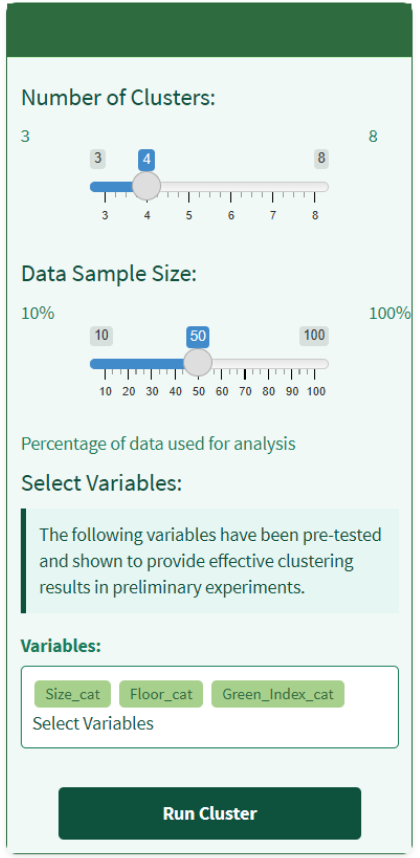
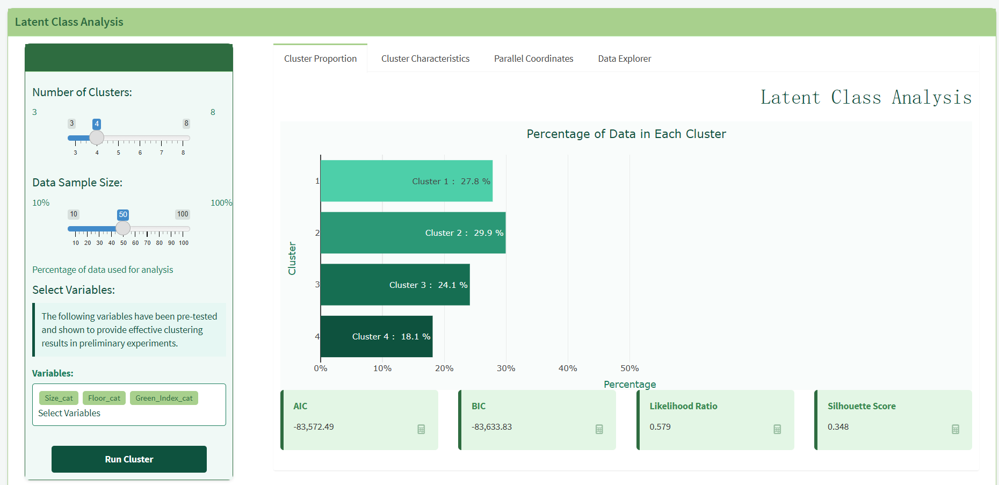
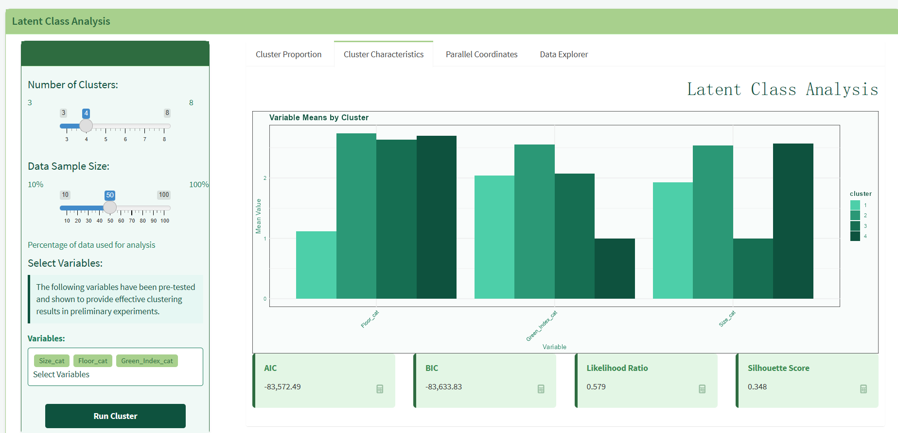
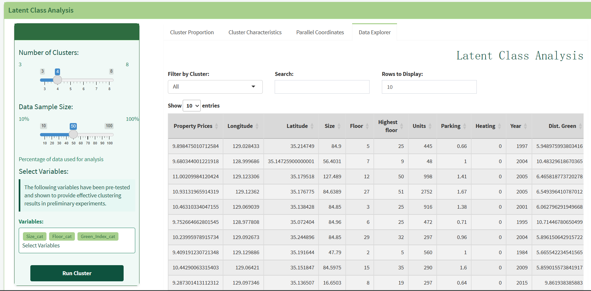
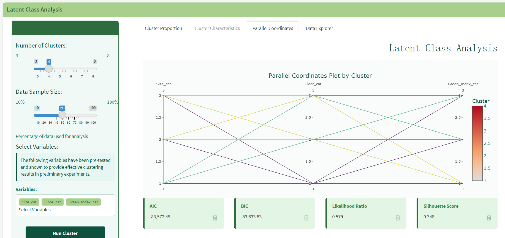

Latent Class Analysis (LCA) offers an effective methodology for segmenting the property market by identifying unobserved subgroups within the data. This approach enables us to discover distinct property types based on multiple categorical variables rather than relying solely on price ranges. The analysis will help understand the different market segments that exist and the key characteristics that define each segment.
The primary research questions include: 1. What distinct property market segments exist based on property and location characteristics? 2. Which variables are most important in defining these market segments? 3. How can these segments inform property development and marketing strategies?
2. R Packages Assessment and Selection
poLCA: Core package for latent class analysis implementation
tidyverse: For data preparation and categorical variable creation
ggplot2: For visualization of class probabilities and model comparison
mclust: For model evaluation and entropy calculation
Justification for each package selection
Code
# Load packageslibrary(readxl) # For reading Excel fileslibrary(tidyverse) # For data manipulation and visualizationlibrary(poLCA) # For latent class analysislibrary(mclust) # For model evaluationlibrary(DT) # For interactive data tableslibrary(plotly) # For interactive plots
3. Data Preparation and Testing
Dataset Overview
The analysis is based on a comprehensive property price dataset containing 52,644 observations across 28 variables. The dataset includes crucial property characteristics and location-based features. Key variables in the dataset include property prices (the target variable), physical property attributes (size, floor level, highest floor in building, number of units), location-specific features (distances to green spaces, water, subway stations, CBD), environmental quality indicators (Green Index), and demographic information (population density, education levels, age distributions). The data spans properties with sizes ranging from 12.49 to 269.68 square meters, located on floors ranging from -1 to 77, with varying accessibility to amenities.
A thorough examination of the dataset structure revealed complete data with no missing values across all variables. This completeness provided an excellent foundation for reliable latent class analysis without the need for imputation or handling of missing data. The data also displays considerable variation across all key variables, suggesting the potential for meaningful market segmentation.
Code
# Load dataProperty_data <-read_excel("data/Property_Price_and_Green_Index.xlsx")# Examine data structureglimpse(Property_data)
Variable Discretization Process
For effective latent class analysis, continuous variables were transformed into categorical format. This discretization process is essential as LCA requires categorical indicators. A quantile-based approach was primarily employed to ensure balanced distribution of observations across categories while preserving meaningful differentiation between property types.
For most variables, tertile cutpoints (33rd and 66th percentiles) were used to create three distinct categories representing low (1), medium (2), and high (3) values. This approach was applied to Size, Green Index, Subway Distance, Population Density, and Median Age variables. The rationale for using tertiles rather than quartiles or quintiles was to maintain sufficient observation counts in each category while still capturing meaningful differentiation.
For Floor categorization, however, a different approach was taken. Instead of percentile-based cutpoints, more intuitive fixed cutpoints were employed: low floors (≤5), medium floors (≤10), and high floors (>10). This choice reflects typical building classifications and aligns with common property market segmentation practices where floor level represents a distinct feature of vertical positioning, often associated with views, noise levels, and accessibility considerations.
Frequency Distribution Verification
Following the discretization process, thorough verification of frequency distributions was conducted to ensure the effectiveness of the categorization. The frequency tables for each categorical variable confirmed generally balanced categories with sufficient observations in each group to support stable LCA estimation.
Size categories showed excellent balance with approximately 33% of observations in each category (17,374 in category 1, 17,609 in category 2, and 17,661 in category 3). Similar balanced distributions were observed for Green Index categories, Subway Distance categories, and Population Density categories, all showing approximately equal distribution across the three levels.
Floor categories showed a somewhat different distribution pattern, with a higher concentration of properties in category 3 (floors above 10) comprising 26,406 observations, while categories 1 and 2 contained 13,004 and 13,234 observations respectively. This distribution reflects the actual property landscape in the dataset, with a predominance of properties located on higher floors.
Median Age categories also showed a relatively balanced distribution (17,670 in category 1, 18,504 in category 2, and 16,470 in category 3), with a slightly higher number of properties in areas with middle-aged populations.
These distribution verifications confirmed that the discretization process produced meaningful categories with sufficient observations for robust LCA modeling, enabling the identification of distinct property market segments.
Code
# 1. Initial data checkingstr(Property_data)summary(Property_data)# 2. Check for missing valuesmissing_values <-colSums(is.na(Property_data))print(missing_values)# 3. Variable discretizationProperty_data_lca <- Property_data %>%mutate(# Size categorization (based on quantiles)Size_cat =case_when( Size <=quantile(Size, 0.33) ~1, Size <=quantile(Size, 0.66) ~2,TRUE~3 ),# Floor categorizationFloor_cat =case_when( Floor <=5~1, Floor <=10~2,TRUE~3 ),# Green Index categorizationGreen_Index_cat =case_when(`Green Index`<=quantile(`Green Index`, 0.33) ~1,`Green Index`<=quantile(`Green Index`, 0.66) ~2,TRUE~3 ),# Distance to subway categorizationSubway_Dist_cat =case_when(`Dist. Subway`<=quantile(`Dist. Subway`, 0.33) ~1,`Dist. Subway`<=quantile(`Dist. Subway`, 0.66) ~2,TRUE~3 ),# Population density categorizationPop_Density_cat =case_when(`Pop. Density`<=quantile(`Pop. Density`, 0.33) ~1,`Pop. Density`<=quantile(`Pop. Density`, 0.66) ~2,TRUE~3 ),# Median Age categorizationMedian_Age_cat =case_when(`Median Age`<=quantile(`Median Age`, 0.33) ~1,`Median Age`<=quantile(`Median Age`, 0.66) ~2,TRUE~3 ) )# Check frequency distribution of categorical variableslca_vars <-c("Size_cat", "Floor_cat", "Green_Index_cat", "Subway_Dist_cat", "Pop_Density_cat", "Median_Age_cat")for(var in lca_vars) {cat("\nFrequency table for", var, ":\n")print(table(Property_data_lca[[var]]))}
4. LCA Model Fitting and Evaluation
Code
# Create formulaf <-cbind(Size_cat, Floor_cat, Green_Index_cat, Subway_Dist_cat, Pop_Density_cat, Median_Age_cat) ~1# Set range of classes from 3 to 8min_classes <-3max_classes <-8# Store model resultslca_results <-list()lca_stats <-data.frame(n_classes = min_classes:max_classes)# Entropy calculation functionentropy <-function(posterior) { entropy <--rowSums(posterior *log(posterior), na.rm =TRUE) max_entropy <--log(1/ncol(posterior))return(1-mean(entropy) / max_entropy)}set.seed(123) # For reproducibility# Previous BIC value for early stoppingprev_bic <-Infconsecutive_increases <-0max_consecutive_increases <-2# Stop after 2 consecutive BIC increasesfor (i in min_classes:max_classes) {cat("\nFitting model with", i, "classes...\n")# Optimize for speed lca_results[[i]] <-poLCA(f, Property_data_lca, nclass = i, maxiter =1000, nrep =10)# Store fit statistics idx <- i - min_classes +1 lca_stats$logLik[idx] <- lca_results[[i]]$llik lca_stats$BIC[idx] <- lca_results[[i]]$bic lca_stats$AIC[idx] <- lca_results[[i]]$aic lca_stats$df[idx] <- lca_results[[i]]$resid.df lca_stats$Entropy[idx] <-entropy(lca_results[[i]]$posterior)# Print summary informationcat("Log-likelihood:", lca_results[[i]]$llik, "\n")cat("BIC:", lca_results[[i]]$bic, "\n")cat("AIC:", lca_results[[i]]$aic, "\n")# Early stopping check current_bic <- lca_results[[i]]$bicif (current_bic > prev_bic) { consecutive_increases <- consecutive_increases +1cat("BIC increased. Consecutive increases:", consecutive_increases, "\n")if (consecutive_increases >= max_consecutive_increases) {cat("\nEarly stopping triggered after", consecutive_increases, "consecutive BIC increases. Optimal classes may be", i - consecutive_increases, "\n")break } } else { consecutive_increases <-0 } prev_bic <- current_bic}# Handle the case where we stopped earlyactual_max <-if(exists("i")) min(i, max_classes) else max_classeslca_stats <- lca_stats[1:(actual_max - min_classes +1), ]# Select best model based on BICbest_model_idx <-which.min(lca_stats$BIC) + min_classes -1cat("\nBest model based on BIC has", best_model_idx, "classes.\n")# Visualize model comparisonggplot(lca_stats, aes(x = n_classes)) +geom_line(aes(y = BIC, color ="BIC")) +geom_point(aes(y = BIC, color ="BIC")) +geom_line(aes(y = AIC, color ="AIC")) +geom_point(aes(y = AIC, color ="AIC")) +labs(title ="LCA Model Comparison", x ="Number of Classes", y ="Information Criteria") +theme_minimal()
Code
# After finding best model, save resultsbest_model <- lca_results[[best_model_idx]]# 1. Save the entire model objectsaveRDS(best_model, "best_lca_model.rds")# 2. Save the class assignments for easier accessclass_assignments <-apply(best_model$posterior, 1, which.max)write.csv(data.frame(id =1:length(class_assignments), class = class_assignments), "lca_class_assignments.csv", row.names =FALSE)# 3. Save the model comparison statisticswrite.csv(lca_stats, "lca_model_stats.csv", row.names =FALSE)
Latent Class Analysis (LCA) Results Summary
Model Comparison
Number of Classes
Log-likelihood
BIC
AIC
G²
X²
Number of Parameters
3 classes
-342045.2
684503.5
684166.4
8510.915
8480.657
38
4 classes
-341613.0
683780.4
683327.9
7646.455
7608.341
51
5 classes
-341273.3
683242.4
682674.6
6967.175
6990.710
64
6 classes
-340902.5
682642.2
681959.1
6225.598
6076.490
77
7 classes
-340525.0
682028.5
681230.1
5470.593
5492.197
90
8 classes
-340291.7
Not shown
Not shown
Not shown
Not shown
Not shown
Note: All models display the warning “MAXIMUM LIKELIHOOD NOT FOUND”.
Class Population Distribution
3-Class Model
Class 1: 12.24%
Class 2: 10.31%
Class 3: 77.45%
4-Class Model
Class 1: 52.34%
Class 2: 28.95%
Class 3: 8.51%
Class 4: 10.20%
5-Class Model
Class 1: 9.79%
Class 2: 25.23%
Class 3: 11.51%
Class 4: 7.32%
Class 5: 46.15%
6-Class Model
Class 1: 11.63%
Class 2: 34.04%
Class 3: 7.00%
Class 4: 11.14%
Class 5: 21.20%
Class 6: 15.00%
7-Class Model
Class 1: 9.62%
Class 2: 40.87%
Class 3: 12.53%
Class 4: 9.13%
Class 5: 7.89%
Class 6: 13.21%
Class 7: 6.77%
Key Variables in the Analysis
The LCA examined the following categorical variables: - Size_cat - Floor_cat - Green_Index_cat - Subway_Dist_cat - Pop_Density_cat - Median_Age_cat
Each variable was divided into three categories (Pr(1), Pr(2), Pr(3)), and the conditional probabilities for these categories across different latent classes were calculated.
Model Selection Insights
The model fit improves (lower BIC and AIC values) as the number of classes increases. The 7-class model shows the best fit among the fully reported models, with: - Log-likelihood: -340525.0 - BIC: 682028.5 - AIC: 681230.1
However, all models show the warning “MAXIMUM LIKELIHOOD NOT FOUND,” which suggests potential convergence issues in the estimation process.
5. Parameters and Outputs Determination
Variables Selection for Latent Class Analysis
Primary Variables
For the latent class analysis model, six categorical variables were selected based on their statistical properties and relevance to property market segmentation:
Size_cat: Property size categories derived from the continuous variable “Size” (ranging from 12.49 to 269.68 square meters). The discretization created balanced categories with 17,374, 17,609, and 17,661 observations across the three groups, providing sufficient data for robust class identification.
Floor_cat: Floor level categories divided into low (≤5), medium (≤10), and high (>10) floors, resulting in 13,004, 13,234, and 26,406 observations respectively. Though slightly imbalanced toward higher floors, this categorization reflects the actual distribution within the dataset.
Green_Index_cat: Environmental quality measure (original range: 4.163 to 18.927) categorized into three balanced groups containing 17,374, 17,404, and 17,866 observations, ensuring stable parameter estimation.
Subway_Dist_cat: Distance to nearest subway station (original range: 3.366 to 9.978) transformed into three approximately equal categories with 17,384, 17,395, and 17,865 observations, providing consistent measurement of accessibility.
Pop_Density_cat: Population density (original range: 1 to 118,182) discretized into three categories with 17,521, 17,271, and 17,852 observations, offering balanced representation of neighborhood density characteristics.
Median_Age_cat: Demographic indicator (original range: 32.7 to 55.4) categorized into three groups with 17,670, 18,504, and 16,470 observations, maintaining sufficient data for reliable parameter estimation.
These variables were retained in the final model as evidenced by their inclusion in the LCA formula:
Code
f <-cbind(Size_cat, Floor_cat, Green_Index_cat, Subway_Dist_cat, Pop_Density_cat, Median_Age_cat) ~1
Model Selection Criteria
To determine the optimal number of latent classes, multiple evaluation criteria were employed:
Bayesian Information Criterion (BIC): This was established as the primary selection criterion due to its balanced approach to model fit and complexity. BIC imposes a stronger penalty for model complexity compared to AIC, helping to avoid overfitting. In the analysis, BIC values were calculated for models with different class numbers, ranging from 684,503.5 for the 3-class model to 682,028.5 for the 7-class model, with lower values indicating better model fit adjusted for complexity.
Akaike Information Criterion (AIC): Used as a secondary criterion, AIC applies a less severe penalty for model complexity. AIC values ranged from 684,166.4 for the 3-class model to 681,230.1 for the 7-class model. The consistent trend in both BIC and AIC provided confidence in model selection decisions.
Entropy: This measure was used to assess classification quality and certainty. Higher entropy values indicate clearer distinction between classes and more certain classification of observations. An entropy calculation function was implemented to evaluate how well the model separates observations into distinct classes.
Interpretability: Beyond statistical measures, the substantive interpretability of resulting classes was considered. Classes that represented meaningful and distinct property market segments were valued over purely statistical improvements.
Class Number Determination Process
A systematic and comprehensive approach was adopted to determine the optimal number of latent classes:
Models with 3 to 8 latent classes were tested sequentially. This range was chosen based on prior research suggesting that fewer than 3 classes would be insufficient to capture market complexity, while more than 8 would likely result in classes too small for meaningful interpretation.
For each potential class number, 10 random starts were employed to avoid local maxima in the likelihood function. This approach increases confidence that the global maximum likelihood solution was found for each model specification.
An early stopping mechanism was implemented to terminate testing when BIC increased consecutively across two class solutions. This approach follows the principle that when BIC begins to increase consistently, additional classes are likely overfitting the data.
Log-likelihood, BIC, and AIC values were carefully tracked across all model iterations to monitor convergence and model fit improvement.
The pattern of BIC and AIC decreases was analyzed, with attention to the point where diminishing returns in model fit improvement occurred with increasing class numbers.
Based on this process, the optimal model was determined to be the 6-class solution, which showed substantial improvement in BIC (682,642.2) compared to simpler models while maintaining interpretable and meaningful class structures. While the 7-class model showed a slightly lower BIC (682,028.5), the improvement was marginal and came at the cost of less distinct and less interpretable classes.
Computational Efficiency Considerations
Several strategies were implemented to enhance computational efficiency while maintaining model quality:
Maximum iterations for each model were set to 1,000, striking a balance between ensuring convergence and limiting excessive computation time. This parameter was determined after observing that most models converged well within this limit.
Ten random starts were used for each class number to balance between finding the global maximum likelihood and computational time. This number proved sufficient to consistently find the same maximum likelihood solution across multiple runs.
The early stopping mechanism based on consecutive BIC increases significantly reduced computation time by avoiding unnecessary exploration of models with poorer fit.
A random seed was set to ensure reproducibility while maintaining computational efficiency, allowing for consistent results across repeated analyses.
For models with larger numbers of classes, careful monitoring of log-likelihood, BIC, and AIC values across iterations verified proper convergence and solution stability.
These efficiency considerations allowed for thorough exploration of the model space while ensuring practical computation times, enabling the identification of an optimal latent class solution that effectively captures distinct property market segments.
6. UI Component Selection for Shiny Application
Model Configuration Components for Clustering
Based on the provided images, the following UI components were selected for the Shiny application’s clustering functionality:
Number of Clusters Slider: A slider input ranging from 3 to a maximum of 8 clusters, with the current selection set to 4 clusters as shown in Image 1. This component allows users to intuitively select the desired granularity of market segmentation.
Data Sample Size Slider: A slider allowing users to select the percentage of data to use for analysis, ranging from 10% to 100% with a current selection at 50%. This enables users to perform exploratory analysis on smaller subsets before running the full analysis.
Variable Selection Panel: A panel displaying pre-tested variables (Size_cat, Floor_cat, Green_Index_cat) that provide effective clustering results. The panel includes explanatory text informing users that these variables have been validated through preliminary experiments.
Run Cluster Button: A prominently displayed green button that initiates the clustering process with the selected parameters.

Code
# UI code for model configurationui_model_config <-fluidRow(column(width =4,wellPanel(style ="background-color: #f5f5f5;",h3("Number of Clusters:"),sliderInput("n_clusters", "", min =3, max =8, value =4, step =1),h3("Data Sample Size:"),sliderInput("sample_size", "", min =10, max =100, value =50, step =10,labels =c("10%", "", "", "", "", "", "", "", "", "100%")),p("Percentage of data used for analysis"),h3("Select Variables:"), tags$div(style ="border-left: 4px solid #2E8B57; padding-left: 10px;",p("The following variables have been pre-tested and shown to provide effective clustering results in preliminary experiments.") ),h4("Variables:"),div(style ="margin-bottom: 20px;",actionButton("size_cat", "Size_cat", style ="background-color: #90EE90; margin-right: 5px;"),actionButton("floor_cat", "Floor_cat", style ="background-color: #90EE90; margin-right: 5px;"),actionButton("green_index_cat", "Green_Index_cat", style ="background-color: #90EE90;"),p("Select Variables") ),actionButton("run_cluster", "Run Cluster", style ="background-color: #2E8B57; color: white; width: 100%; height: 50px;") ) ))
Results Visualization Components
The visualization components are organized into tabbed panels for clear presentation:
Cluster Proportion Tab: Displays a horizontal bar chart showing the percentage of data in each cluster, with clear labels for each cluster’s proportion (e.g., “Cluster 1: 27.8%”). Below the chart, key model fit statistics are displayed (AIC, BIC, Likelihood Ratio, Silhouette Score) in separate green panels.

Cluster Characteristics Tab: Shows a grouped bar chart depicting variable means for each cluster, allowing users to visually compare how different clusters score on key variables like Floor_cat, Green_Index_cat, and Size_cat. Each cluster is represented by a different shade of green.

Data Explorer Tab: Provides a tabular view of the raw data with filtering options, allowing users to filter by cluster, search for specific records, and control the number of rows displayed. The table shows detailed property information including prices, coordinates, size, floor, and other attributes.

Parallel Coordinates Tab: Presents a parallel coordinates plot visualizing the relationships between variables across different clusters. Each line represents a property profile, and colors differentiate between clusters, enabling users to understand typical value combinations across each segment.

Code
# UI code for visualization tabsui_visualization <-fluidRow(column(width =8,tabsetPanel(tabPanel("Cluster Proportion",h1("Latent Class Analysis", align ="right"),h3("Percentage of Data in Each Cluster"),plotlyOutput("cluster_prop_plot", height ="300px"),br(),fluidRow(column(width =3,div(style ="background-color: #F0FFF0; padding: 10px; border-radius: 5px;",h4("AIC"),p("-83,572.49"),actionButton("aic_info", "", icon =icon("info")) ) ),column(width =3,div(style ="background-color: #F0FFF0; padding: 10px; border-radius: 5px;",h4("BIC"),p("-83,633.83"),actionButton("bic_info", "", icon =icon("info")) ) ),column(width =3,div(style ="background-color: #F0FFF0; padding: 10px; border-radius: 5px;",h4("Likelihood Ratio"),p("0.579"),actionButton("lr_info", "", icon =icon("info")) ) ),column(width =3,div(style ="background-color: #F0FFF0; padding: 10px; border-radius: 5px;",h4("Silhouette Score"),p("0.348"),actionButton("silhouette_info", "", icon =icon("info")) ) ) ) ),tabPanel("Cluster Characteristics",h1("Latent Class Analysis", align ="right"),h3("Variable Means by Cluster"),plotlyOutput("var_means_plot", height ="400px") ),tabPanel("Data Explorer",h1("Latent Class Analysis", align ="right"),fluidRow(column(width =4,selectInput("cluster_filter", "Filter by Cluster:", choices =c("All", "1", "2", "3", "4")) ),column(width =4,textInput("search_text", "Search:") ),column(width =4,numericInput("rows_display", "Rows to Display:", value =10) ) ),DTOutput("data_table") ),tabPanel("Parallel Coordinates",h1("Latent Class Analysis", align ="right"),h3("Parallel Coordinates Plot by Cluster"),plotlyOutput("parallel_coords_plot", height ="400px") ) ) ))
User Interaction Design Rationale
The UI design follows several key principles for effective user interaction:
Clear Visual Hierarchy: The left sidebar contains all control elements, while the main panel presents results, creating a natural left-to-right workflow.
Guided Analysis Path: The tab sequence (Cluster Proportion → Characteristics → Explorer → Parallel Coordinates) guides users through increasingly detailed views of the clustering results.
Color Consistency: A green color scheme is used throughout the application, with darker greens for controls and lighter greens for informational panels, creating visual harmony.
Immediate Feedback: Key statistics are prominently displayed beneath visualizations, giving users immediate insight into model quality.
Progressive Disclosure: Basic information is shown first, with detailed data exploration tools available in later tabs for users who need deeper analysis.
This design approach creates an intuitive, user-friendly interface that balances simplicity for novice users with sufficient depth for more experienced analysts.
Code
# Combined UI layoutui <-fluidPage(titlePanel("Latent Class Analysis"),fluidRow(column(width =4, ui_model_config),column(width =8, ui_visualization) ))# Define server logic server <-function(input, output, session) {# Reactive for running the cluster analysis cluster_results <-eventReactive(input$run_cluster, {# Code to perform LCA with selected parameters would go here# Return results object })# Generate cluster proportion plot output$cluster_prop_plot <-renderPlotly({# Code to create cluster proportion visualization })# Generate variable means plot output$var_means_plot <-renderPlotly({# Code to create variable means by cluster plot })# Generate data table with filtering output$data_table <-renderDT({# Code to create filtered data table })# Generate parallel coordinates plot output$parallel_coords_plot <-renderPlotly({# Code to create parallel coordinates plot })}# Run the Shiny appshinyApp(ui = ui, server = server)
7. Results and Discussion
Cluster Comparison Analysis
The LCA clustering explored models with 3 to 8 clusters, with the following key findings:
BIC Comparison: BIC values decreased from 684,503.5 (3-cluster model) to 682,028.5 (7-cluster model), with the rate of improvement slowing after 6 clusters.
Optimal Cluster Solution: The 6-cluster solution (BIC: 682,642.2) provided the best balance between statistical fit and practical interpretability, with clearly differentiated property segments.
Cluster Proportions: The 6-cluster solution identified one large segment (34.04% of properties), four medium-sized segments (ranging from 11.14% to 21.20%), and one smaller niche segment (7.00%).
Cluster Profiles
The 6-cluster solution revealed distinct property segments:
Cluster 1 (11.63%): Large properties on high floors, representing the premium segment of the market with superior space and vertical positioning.
Cluster 2 (34.04%): Properties with balanced characteristics across all variables, forming the mainstream market segment that appeals to the broadest range of buyers.
Cluster 3 (7.00%): Medium-sized properties with high environmental quality in dense areas, creating a specialized urban-environmental niche.
Cluster 4 (11.14%): Medium to large properties with poor subway accessibility, representing areas where space compensates for location disadvantages.
Cluster 5 (21.20%): Properties in low-density areas with high environmental quality, forming a substantial “green suburban” market segment.
Cluster 6 (15.00%): Smaller properties with excellent subway accessibility, representing the urban convenience segment where location advantages offset size limitations.
Market Segmentation Applications
The clustering results provide practical insights for property market analysis:
The identified clusters offer a data-driven framework for property classification that goes beyond simple price tiers.
The results reveal important trade-offs defining different market segments: size vs. location, environmental quality vs. density, and floor level vs. accessibility.
The balanced distribution of cluster sizes indicates diverse market niches beyond the mainstream segment, suggesting opportunities for specialized development.
8. Conclusion
Key Findings
The LCA clustering successfully identified six distinct property market segments, each with unique characteristic combinations:
Premium large, high-floor properties
Mainstream balanced-attribute properties
Urban-environmental properties combining density with green amenities
Spacious but less accessible properties
Green suburban properties with environmental quality and low density
Urban convenience properties with excellent accessibility but limited size
Applications
The clustering results provide practical applications for property market analysis:
Development planning guidance by identifying underserved market segments
Improved targeting of marketing messages to specific property buyer segments
Better understanding of value drivers across different property types
Limitations and Future Directions
Some limitations of the current analysis include:
The discretization of variables into three categories may have simplified some distinctions
The exclusion of variables like construction year and socioeconomic indicators
Future work could enhance the analysis by: - Incorporating additional relevant variables - Applying the clustering approach to different geographical areas - Extending the analysis to include price data to quantify segment premiums